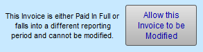
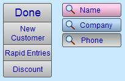
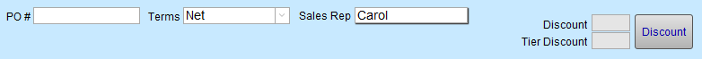
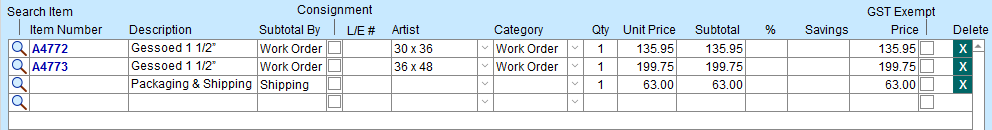
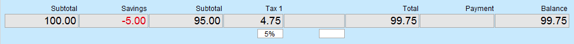
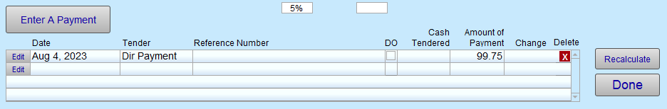

Invoices Data Entry Screen
Creating a New Invoice or clicking on the Data Entry button will take you to the Line Item Entry screen.
-
See also: Invoice Quick Reference Page
Invoices Data Entry Screen Explained
Caution: This screen may appear differently depending on the age of the Invoice.
For UNPAID INVOICE for CURRENT MONTH or INVOICE PAID IN FULL
-
If the date of the Invoice falls within the current month, then the Line Item Entry screen appears as usual.
For UNPAID INVOICE for a PREVIOUS MONTH
However, if the Invoice is dated prior to the current month, then:
-
Modifications can only be made to the Invoice by clicking the Allow this invoice to be Modified button (top left).

-
Modifications to this Invoice affect the sales reports for the time period to which the Invoice belongs.
-
If a security password has been activated, then the user is prompted to enter it (prohibits items from being added to the Invoice but still allows a payment to be accepted).
Invoice Metadata Section

Done Button
-
Exits the screen and returns to Invoice form view.
-
It also runs a script to remove products from inventory, update totals & total balance due, mark Work Orders as “Posted”, enter artists to the customer’s record and update all related files.
New Customer Button
-
Creates a new record in the Contacts file and automatically generates a new ID# for the customer.
-
A search box appears; enter the First and Last name of this customer. FrameReady will search the Contacts file to make sure that this customer has not already been entered in the system. You may also search by Company name. Click Search.
-
If the customer is not found then the New Contact Information screen appears for you to fill in. Click Done when finished.
Rapid Entries Button
-
Rapid Entries is a quick way to enter multiple retail items. This feature is particularly useful with bar code scanners. The screen changes and an item number entry box is selected. Scan the barcode or enter the product # and press Enter, Return or Tab on your keyboard. The item is entered with a Qty of 1 (or the default Qty as specified in the Price Codes file). Continue to enter or scan all items. Click Done to return to the main Line Item Entry screen.
-
See also: Invoices Rapid Entries Screen
Discount Button
-
Triggers a request for the discount to be applied to all retail items on the current Invoice. When finding line items to subtotal, FrameReady automatically omits:
-
lines items with a discount, or
-
line items where the category is a Work Order, or
-
line items where the category is a Gift Certificate.
-
-
Use preset buttons or enter the discount value in the Discount field and click Proceed.
-
It is recommended that you first enter all items to be discounted, then apply the discount, then enter the group of non-discounted items. Or you can enter items that have a different discount and then apply a discount to those items.
-
See also: Add a Discount on an Invoice
Find a Customer by Name Button
-
The pink Find by Name button presents a search dialog box where you can enter all or part of the customer’s name. This will search the two contact fields in the Contacts file. If one record is found, then the customer will be inserted. If more than one record is found, then a list will be displayed for you to choose the correct customer. If no records are found, then you will be given the opportunity to enter a new contact record.
Find a Customer by Company Button
-
The blue by Company button works the same as the pink button except that it searches the Company field in the Contacts file.
Find a Customer by Phone Button
-
The grey by Phone button presents a search dialog box where you can enter a customer’s phone number.
-
You may enter either seven or ten digits. It is not necessary to add dashes or brackets.
-
Any phone number listed in the customer’s record may be used for the search. If more than one customer have the same phone (e.g. members of the same household), then a selection list will be displayed.
ID # Field
-
The Customer ID# field displays the customer’s unique identification number.
-
A contact can also be loaded in by filling in their ID#.
Clear (x) Button
-
Removes the customer from the current Invoice only; will not remove them from the Contacts file database.
Invoice Metadata (2nd row)

PO # Field
-
Purchase Order number.
-
If a corporate customer has provided you with a Purchase Order number, then enter it into this field. The number will appear on the printed Invoice.
Terms Field
-
A drop-down menu with selections: Net; Net/30; COD; 48 Hour Approval, Estimate, etc.
-
If you select 48 Hour Approval, then the retail Products on the Invoices are not removed from inventory until the selection in the Terms drop-down is changed or removed and you click the Done button.
-
The Terms can be changed from either the Invoice screen or the Line Items screen.
-
Set up for "Auto Enter": Set up Invoice General Options
-
If you select the term Estimate, then the word "Invoice" on the printed invoice changes to the word, "Estimate" however, inventory is still removed.
-
To add other items to your list of Terms, select Edit… at the bottom of the drop-down list.
Sales Rep Field
-
Mandatory. A name must be entered before leaving the screen.
-
A default can also be set up to transfer the Order Taken By name onto all invoices created with the Post to Invoice button located in the Work Order file.
-
Set up for "Auto Enter": Set up Invoice General Options
Discount Field, Tier Discount Field and Discount Button
-
Auto-filled from the Contacts file.
-
Applies the same discount to all (and only) retail items shown on the Invoice. Work Orders will not receive the discount; any such discounts must be done in the individual Work Order.
-
The Discount button opens the Apply Discount dialog window.
-
See also: Add a Discount on an Invoice
Line Item / Data Section

Search (Magnifying Glass Icon) Button
-
Triggers a dialog box to search for an item in either the Products or Price Codes files. It can also be used for a Work Order that needs to be entered on an Invoice in unusual circumstances.
-
The Item Number field searches Products, Price Codes and Work Orders.
-
The Description field searches only the Products and Price Codes file.
-
The Artist field searches only the Products file.
-
Show All gives you the entire list of retail products.
-
If more than one item is found then the results appear in a list.
"Subtotal By" (Tag) Field
-
Line items can be "tagged" as they are added to an Invoice. When printed on an Invoice, tagged items are grouped together and a subtotal footer is calculated for each tag used. Keep tag names short so they fit in the display area.
-
You can also set the Subtotal By field on a Work Order by opening the Notes tab.
-
Click the Edit... entry to manage the list of tags.
-
Leave the Subtotal By field blank to prevent grouping items together; items are then sorted in the order they were added to the Invoice.
-
You can also search the Subtotal By field.
-
See also: Group Items on an Invoice
Item Number Field
-
May be entered with a barcode scanner or typed in.
-
Note: Items in the Products file with a UPC Number will not display the Item Number when scanned into an Invoice. However all the same information will be entered as if you had used the Item #.
Description
-
Displays previously-entered information when the product is selected.
-
Changes made to the items in these fields will not affect the original record in the Products file.
Consignment Checkbox
L/E Number Fields
-
Displays previously-entered information when the product is selected.
-
Changes made to the items in these fields will not affect the original record in the Products file.
Artist Drop-down
-
A list of all previously entered Artists.
-
The artist name is automatically filled in if it was entered onto the Work Order or if the artist name is associated with artwork from inventory.
Category Drop-down
-
Line Item Entry screen only.
-
The category is automatically entered for all Work Orders and retail items (selected from the Products file).
-
If you enter a retail item onto the invoice which is not present in the Products file, you should assign it a category. You can add a category to the list by typing in the field. Additionally, the Category field is a drop-down list of all previously used categories.
-
By identifying a category on the Invoice, your item will be listed in your Sales Report by Category but it still will not appear in your list of retail items sold.
-
To adjust, fix or remove Categories, see: Adjust or Fix Invoice Categories
Qty Field
-
Use the quantity (Qty) field to indicate how many of the items the customer is purchasing.
-
Note: The Unit Price will be multiplied by the number in the Qty field. This field must contain a value in order to calculate a price.
Unit Price Field
-
The retail price of one item/order and is not affected by any percentage discount.
-
This field may be modified.
Subtotal Field
-
The Unit Price multiplied by the Qty.
-
The Subtotal totals all line items before taxes. This field is not modifiable.
% Field
-
The percentage discount that was either:
-
applied on the Work Order screen,
-
applied in the Product file, or
-
manually entered on this screen.
-
-
The percentage discount only affects the Price of the line item.
-
The discount can be removed by either removing it from the original record or deleting the contents of the field.
Savings Field
-
The amount the customer is saving on this line item due to the applied discount.
-
This field is not modifiable.
Price Field
-
The retail price of an item/order and reflects both the quantity and percentage discount applied to the item/order.
-
This field is not modifiable.
Tax Exempt Checkbox(es)
-
If Tax Exemption number(s) exist for the customer (in their Contact record under the Terms Tab) then Tax Exemption applies to the entire Invoice and the checkbox appears with an X to indicate an item is tax exempt.
-
Click the checkbox to enable or disable; FrameReady automatically recalculates totals.
-
To make an item always tax exempt, go to Products > Pricing tab and click the appropriate Tax Exempt checkbox.
Delete (x) Button
-
Line Item Entry screen only.
-
Does not appear until an item has been entered.
-
Removes all of the data listed on the line entry. A confirm dialog appears, identify the type of line to be deleted. You must click the delete button to remove the line.
-
Individual items can be changed by using the backspace key, e.g. Amount of Payment, Cash Tendered, Date, etc.
-
If a line item has been processed it cannot be deleted, i.e. you have clicked Done. If later you discover an error then resolve it by adding new lines to correct the original error.
Summary Section

Subtotal Field
-
Totals all line items before taxes and savings.
-
Not modifiable.
Savings Field
-
Savings calculated on all line items.
2nd Subtotal Field
-
The Subtotal totals all line items before taxes.
-
When clicked, a popover box titled Taxable and Non-taxable Sums display a breakdown of taxable and non-taxable sums.
Tax Rate Field
-
The Tax Rate fields display the percentage of tax applied to sales.
-
The tax rate modified in this field only affects the current Invoice. FrameReady supports a maximum of two tax rates.
-
Note: Tax rates are set in Main Menu > SetUp Data. If the government changes the tax rate return there to make the change.
Tax Field(s)
-
The calculated dollar amount of the Taxes applied to this Invoice.
-
The labels to identify the tax fields can be preset in the Main Menu > Setup Data.
Total Field
-
The calculation of the subtotal field + tax field(s).
-
This field is not modifiable.
Payment Field
-
The total dollar amount of all payments the customer has applied to this Invoice will be displayed in red with a minus symbol in front of it.
-
If the payment value appears in black without the minus symbol, it indicates money paid to the customer (usually for a refund).
-
This field is not modifiable.
Balance Field
-
The Balance Due on the Invoice is calculated by subtracting the amount in the Payment field from the value in the Total field (Total – Payment = Balance)
-
This field indicates the balance for this Invoice only.
-
This field is not modifiable.
Enter a Payment Section
This section lists payment transactions as per this Invoice. Use the Edit button when a payment needs to be modified.
Note: If more than four payments have been applied to the Invoice, then use the scroll bar on the right to view the others. On the one-part invoice, five of the most recent payments will print showing: Date, Tender, Reference Number (5 characters only) & Amount. On the two-part invoice, three of the most recent payments will print showing: Date, Tender & Amount.
How to take a Payment
-
Click the Enter Payment button to receive money.
-
Select a Tender (required field) from the drop-down.
-
The value pre-entered in the Amount field is always the total amount required to pay the Invoice in full. The amount can be changed manually.
See also: Invoices Enter a Payment Screen
Payment Transaction Table

Edit Button
-
Use when a payment needs to be modified.
Date Field
-
The date payment was entered.
-
If manually typing in the date, enter it as MM/DD/YYYY
Tender Field
-
This is a mandatory field and MUST contain a value.
-
The items in the list can be modified using the Edit… feature at the bottom of the list.
-
Dollar values on the Payment Report are grouped together based on the selection of the Tender field.
-
When a non-taxable deposit is applied to an invoice, FrameReady automatically enters the Tender as “Deposit”.
Note: The spelling of ‘Gift Cert’, ‘Store Credit’, and ‘Refund – Store Credit’ should not be changed as these are scripted to update the Gift Certificates file.
There are certain terms in the Tender field which are important and should not be changed.
-
Refund - Store Credit, creates a new record in the Gift Certificate / Store Credit file for the customer receiving the credit.
-
Store Credit & Gift Cert, when used in conjunction with the Reference # field searches for a credit the Gift Certificate / Store Credit file and applies it to the current Invoice. If only a portion of the credit is used then a new store credit is issued for the balance.
-
All other terms in the Tender field simply indicate how the transaction was concluded.
Reference Field
-
Use to record a check number, credit card authorization number, gift certificate number, or store credit, etc.
-
Up to 5 digits of this field will display on the printed one-part invoice.
Cash Tendered Field
-
In the Receipts window, the label reads: To Calculate Change Enter Amount Given Here
-
The Cash Tendered field calculates the change required for a cash transaction. The Amount of Payment field must be entered prior to entering the Cash Tendered.
-
The Cash Tendered must be greater than the Amount or an error message will occur.
-
This field is not used on any reports.
-
The Change field displays the difference between the Cash Tendered and the Amount of Payment fields.
Amount of Payment Field
-
The amount of money the customer is applying to the Invoice. This field can be manually adjusted in the Receipts screen entered by Edit.
Delete Button
-
Delete clears the information from the line.
Recalculate Button
-
The Recalculate button can be used when items are added or deleted from the Invoice to show the new total. This button may be used at any time.
Done Button
-
The Done button exits and returns to the Invoice form view.
-
It also runs a script to remove products from inventory, update totals & total balance due, mark Work Orders as “Posted”, enter artists to the customer’s record and update all related files.
© 2023 Adatasol, Inc.